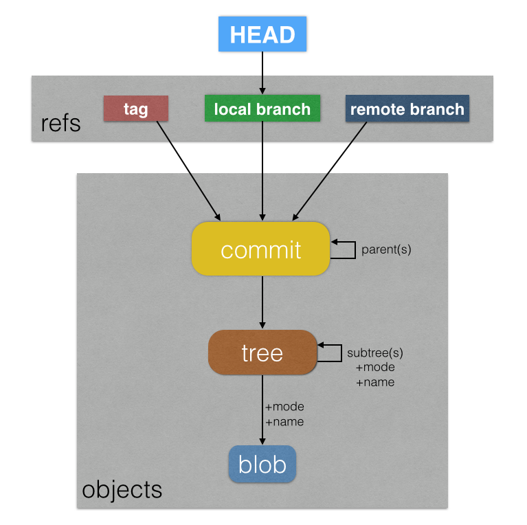

Git Terms
Git: a piece of software that allows for tracking of changes, industry-standard version control system for web development, must be installed on your computer, can be used to track changes to any project that is composed of text files arranged in directories
Git project: consists of three parts listed below
Working Directory: aka working tree, make changes to files - additions, deletions, modifications
Staging Area: list changes made to the working directory, files ready for commit
Repository: where Git permanently stores changes as sequential versions (aka commits) of the project
Git workflow: edit files in working directory, add files to staging area, save changes (commit) to repository
Git collobarative workflow: fetch and merge changes from remote, create new local branch to work on feature, develop feature on new branch making commits along way, when done fetch and merge from remote again, push project branch to remote for review
Github: simply a cloud storage service popularly used for backing up Git repositories, you copy (push) your local repository to Github periodically to back it up, GitHub automatically displays contents of README.txt if in your repository
HEAD: this is what is currently checkout out, and typically points to a branch. Less typically, it can also point directly to a commit which is called a detached head state, and commits cannot be made in this state.
branch: this is simply a pointer to a commit, which updates to the child commit if you make a commit while the branch is checked out
commit: this is a pointer to a tree, in particular it always points to the root tree/working directory tree, it also points to its parent commit, the one that the head branch was pointing to when you made the commit.
tree: this is a collection of pointers to other trees and blobs along with the names of the trees and blobs, typically each commit makes a new tree reflecting the working directory
blob: this is how git stores a file. every time you commit if a file has changed, a new blob is created for that file containing the full contents of the file.
master branch: at any branching point, one branch is actually considered the master branch, so there is a continuous master branch back to the beginning
remote: a git repository outside your git project that multiple collaborators can work on and merge changes to, could be on the web, a network, or just somewhere else on your computer
Git Project Standard Files
readme documentation of project, good idea in general to document your projects
.gitignore: this file can be included in the root folder of a git project's working directory to list all files and directories in the working directory that git should ignore, simply list each file name or directory to ignore on its own line. All files and subdirectories in an ignored directory are ignored
comments: comment a line by starting it with #- .gitignore not in root: can create additional gitignore files in subdirectories, which will take precedence over the .gitignore in the root directory
- directories: start directory names with / to only get directories in root folder, otherwise it will match all directories with that name in subdirectories, e.g. /ignorethisdirectory
- end directory names with / to only match directories, otherwise will match files that happen to have the same name as the directory
- Wildcard: Use the * symbol as a wildcard, e.g. *.log will ignore all .log files
- Negation: Use the ! to negate patterns. e.g. !audit.log in a subdirectory's .gitignore file, will override the *.log in the root .gitignore file and make it so audit.log is not ignored
- git ls-files --others --ignored --exclude-standard run this in the root of a project to get a list of all the files git is ignoring based on your .gitignore file(s)
license
Git object model:
Basic Workflow Commands
git init: turns the current working directory into a Git project
- Can use git init in a local project directory that you've already worked on to start using version control
- For a brand new project, helpful to use git init projectname to create a git project directory named projectname in the current directory
git config --global alias.sla 'log --oneline --decorate --graph --all' This will create an alias for a long command, in this case you alias the log command with options, to 'sla', (short log all), and this can then be run with simply 'git sla' in the command line
git config --global user.name "[firstname lastname]" also git config --global user.email "[email address]" set name/email for use in git commits
git help command-name use this to get the man page for git for the given command
git status: check status of changes in working directory
git add filename: adds filename to the staging area, can list multiple filenames one after the other separated by a space or a single period adds all files in working directory (git add . or equivalently git add --all)
- git add -u . The -u option will look for all deleted files (files in HEAD but not in working directory) and stage them for deletion
- git add -A . The -A option is for after you move files around in your working directory. It will notice files that seem to have been deleted and new files and recognize that the files are the same and were moved (this is true even if you made changes to the files as long as they are 50% similar judged by git's similarity index). It will add these moves to the staging area.
- git add --patchThis will allow you to pick out individual changes in each file to commit. E.g. if you made two changes to a file and you want those to be in separate commits. It will present a list of options to perform for each "hunk" (type h and hit enter when the list of options appears to see the option definitions). You can choose one hunk at a time to include in the commit, or there are options to split hunks into even smaller hunks, or full editing in vim to define how to split a hunk. Only the hunks you add will be staged, the rest will be unstaged but remain in your working directory.
git rm filename: deletes filename from staging area. If filename has already been deleted from working directory, then this will delete it from staging area so the removal can then be committed. If filename hasn't been deleted from working directory, then this command will delete it from the working directory and staging area
- git rm --cached filenamedeletes filename from staging area to be deleted in next commit, but does not delete file from working directory (file in working directory will become untracked file)
git mv currentfile newfile moves file at currentfile (name of file with extension, may include a path) to newfile (new path including name of file and extension) e.g. git mv myfile.jpg images/myfile.jpg, doesn't have to have same name of file. Technically this is a deletion and addition, and there is no behind the scenes tracking of the file as moved, instead this is detected after the fact when needed using a similarity index
- This moves file in the working directory and staging area, to be committed
- If you move a file in your working directory on your own without the mv command, then to make things right in your staging area, use git rm oldfile to remove the old file from the staging area and git add newfile to add the new file to the staging area, which will cause git to recognize it as a moved file
git diff filename: for given filename, checks differences between working directory and staging area
- git diff leave off filename to see all differences for all files
- git diff --staged will show differences between files in staging area and HEAD commit
- git diff HEAD will show differences between working directory files and HEAD commit
- git diff --color-words add the --color-words to any diff command to see individual word changes on edited lines. normally for an edited line git shows the original line being deleted and a new line being added
- git diff --word-diff similar to --color-words just slightly different format
- git diff --stat will only show filenames that have changes, won't show line by line changes
git commit -m "message": permanently stores changes in staging area to repository, creates a "commit" with unique 40-character hexadecimal value SHA or git ref. Typically involves creating at least one new blob for a new file added or a new version of an existing file. Also typically involves creating at least one new tree to represent the working directory that references the new blobs, and then a commit is created pointing to that new tree. (Only rare circumstances will not require a new tree representing the working directory - if your working directory just so happens to exactly match a prior committed version of your working directory with exactly the same files, contents, names, etc. then the new tree will hash to the exact same SHA as one that already exists and thus your commit will point to the already existing tree instead of creating a new one. This happens if you make a commit for some reason with absolutely no changes). The new commit points to the parent commit (the one that the HEAD branch was pointing to when commit is made), and finally this updates the branch HEAD is pointing to, to now point at the new commit.
- message should be in present tense and less than 50 characters, start with capitol letter
- Often will group changes to multiple files under a single commit, should craft commits to tell an easy to understand story of changes
- Can also make commits in a Github repo by editing a file directly in Github, when you save changes it creates a commit for the changes to that file
- can use git commit -am "message" to automatically git add all files and commit them in one command
- git commit --amend --no-edit This will commit the files in your staging area, but add them to your previous commit, this is handy if you forgot to add a file to a commit you just made. --no-edit will make it so the commit message doesn't change (no prompt to change it). Technically this creates a new commit hash that has the changes from your previous commit and the one you are doing currently. The previous commit is taken out of the branch.
git log: view chronological list of commits to repository, options below can be combined e.g. git log --patch --oneline
- git log --oneline only shows shortened commit ref and message
- git log --stat shows files involved in each commit
- git log --patch shows the difference between each subsequent commit, like in diff command
- git log --graph --all --decorate --oneline --graph shows a graph of all your commits and different branches other options aren't necessary, just a recommended way to change how graph looks, very useful way to look at history
- git log --pretty=format: '%C(yellow)%h%C(reset) - %an [%C(green)%ar%C(reset)] %s' %h is shortened commit hash, %an is author, %ar is relative date of commit, %s is short summary, %C sets a color and then resets a color basically wrapping something in that color. This allows you to make your own format for the log.
- git log -E -i --grep 'cach(e|ing)' This will search through your commit messages of everything in the history, for a regular expression, in this case it will find anything with cache or cahing in the history. -E extended regular expressions for full searching power, -i case insensitive
- git log -S with_active_subscription -S searches the actual code in each commit for any changes that involve the provided string. In this case it will show any commit that changes the number of occurances of the provided string with_active_subscription, great if you have code you need to find
- git log --oneline -- MyFile.txt Will show all changes to just the provided file MyFile.txt. This example includes the --oneline option which is mandatory, and use -- with a space after the option, which is needed to separate options from arguments, you could also just run git log MyFile.txt if you don't want oneline.
- git blame MyFile.txt gives you the name of who changed each line in the file.
- git log --stat -- filename shows all commits that contain changes to the given filename, which should include extension and may contain a filepath e.g. git log --stat -- images/myimg.jpg
- git log --stat -M --follow -- filename use this version to follow the given filename across moves, showing commits for earlier file location, defaults to a 50% similarity index to follow files, can include different threshold after the -M if desired, e.g. -M75
git stash: This stores unstaged changes in a special 'stash'. Good if you're not ready to make a commit, but you need to leave the branch you're on and go work on something else.
- git stash -u: The -u mean include untracked files and its best to use stash with this option to save your stash. It will include both changes to existing files and any brand new files that you haven't started tracking yet.
- git stash pop: This will restore the saved stash back to your working directory
- git stash drop: This will delete the saved stash
Backtracking Commands
git show HEAD: shows log info and all committed changes for the HEAD commit, or any commit hash you give it
git reflog: the reflog provides 30 days of all history on a branch, both forward commits and backward resets, deletions of branches, and rebases
- gitk --all `git reflog | cut -c1-7`& use this comman to open a GUI showing the reflog so you can better see the organization of the reflog, which branches are out on their own, what commits are no longer part of it
- git reflog show branch-name shows the full reflog history for the given branch-name only
git cherry-pick SHAthis will replay the changes from the give commit SHA on your current checked out branch, and create a new commit on your current branch with those changes. This is handy if you accidentally made a commit on the master branch but wanted it to be on a feature branch instead. You can cherry pick the master branch commit and copy it over to the feature branch, then go in and delete the master branch commit with reset --hard. Instead of one SHA, you can use SHA1..SHA2 to grab a whole range of SHAs between and including the two given ones.
Reset
Reset changes the commit that your current branch points to. You give reset the commit SHA that you want the branch to point to, and the branch will now point to that commit. (Instead of a SHA you can use a shortcut of HEAD/HEAD~/HEAD~2, to make the branch point at the current commit, the parent commit, the grandparent commit, and so on. Or you can but in a branch name which will use the commit that that branch is pointing to) Additionally, it will update your staging area and/or working directory with the new commit you are pointing to. reset soft only moves the head, reset mixed additionally updates the staging area, and reset hard additionally updates the working directory.
git reset --soft SHA: Moves the branch to the given SHA (first 7 characters) and stops there. Does not change the staging area or working directory. Instead of a SHA, you could use HEAD~ to move to the parent of the HEAD (i.e. one commit back from where HEAD currently is) or HEAD~2 to move two parents back or any other number of parents back. This can be useful because you can then make a new commit from the unchanged files in the staging area. You could move back one commit to essentially redo your most recent commit, or you could move back multiple commits to essentially squash multiple commits into one commit.
git reset --mixed SHA: Moves the branch to the given SHA (first 7 chars, or use HEAD/HEAD~/HEAD~2/etc shorthand) and then updates the staging area to the files in that commit. --mixed is the default so it can also be omitted and git reset SHA will assume --mixed. Using it with HEAD is useful when you want to "unstage" files in the staging area because it will set them back to the version in HEAD, but leave the working directory untouched. If you specify a particular file name as in git reset --mixed SHA file.txt, then the first step of moving the head is skipped, but the second step of copying the file from the given SHA into the staging directory is still performed. If used with HEAD for the SHA, then this is useful to "unstage" a single file.
git reset --hard SHA: Moves the current branch to the given SHA (first 7 chars, or use HEAD~/HEAD~2/etc shorthand) and then updates the staging area and working directory to the files in that commit. This is potentially dangerous if the files in the working directory have not been saved to a commit. If they have, then you could get them back using reflog. If they haven't then they will be permanently lost. This is handy when you want to delete commits from your branch and just completely move the branch back in time to a previous commit.
Checkout
Checkout changes what your HEAD points to and updates your staging and working directory. Except it also has a way of interacting with files that does not change what HEAD points to and only updates the working directory.
The typical use of checkout is git checkout -b branch_name starting_branch_name, which moves HEAD to point at branch_name and updates your working directory and staging area to match that branch. -b is optional if you want to create a new branch called branch_name and then move HEAD to it. In this case, you can also optionally include starting_branch to instruct the new branch to point to the same commit as starting_branch, if it is not included, it will point to the same commit pointed to by the branch that head points to. Before moving HEAD to a new branch, git will check if you have uncommitted changes in your working directory and warn you if so.
Checkout can also be used with a commit SHA instead of a branch name, as in git checkout commit_SHA, this is what creates a detached HEAD state, because now HEAD is bypassing your branches and checking out a commit directly. Further commits cannot be made when in this state. Commits can only be made when HEAD is pointing to a branch. This likely updates both your working directory and staging area with that commit.
checkout can also be used with a tree and usually a particular filename to find particular versions of particular files in your git repo, and copy them into your current working directory, regardless of what your head is currently on. In this usage, it does not change what your HEAD is pointing to, and it does not change your staging area. When using it this way you will use git checkout * -- filename, where * is a tree or anything that points to a tree through a chain of pointers. That is it can be HEAD, a branch name, a commit SHA, or a tree SHA since the chain of pointers is HEAD-->branch-->commit-->tree. Once the chain of pointers is followed to that tree, the blob associated with the filename in that tree, will be copied into your working directory. Examples:
- git checkout HEAD filename: replace filename in working directory with version of filename in HEAD commit, can use . to replace all files. Useful if you've made changes to the file in the working directory that you want to discard and revert to the file last committed in your current branch.
- git checkout SHA filename: can also use a commit SHA (or first 7 characters of one) to replace the given filename in the working directory with the version of that file from the given SHA.
- git checkout -- filename: replaces filename in working directory with version of file in most recent commit
Branching Commands
git branch: shows all branches with a * next to the branch you are on, the master branch should always be production-ready, so always do your work on a separate branch
git branch new_branch: creates a new branch with name new_branch, name should describe purpose of branch in a word or two, no whitespace e.g. refactor-authentication or user-content-cache-key
git branch -vv this lists all branches along with what commit sha they are pointing to, and what their upstream tracking branch is.
git branch -d branch_name: deletes branch with branch_name, should be done once a branch has been merged into a receiver branch like master because the receiver will have all the commits from the branch in it after merging, can't delete the branch you're on, so switch to a different branch first
- git branch -D branchname: If a branch is not fully merged onto master, then -d won't let you delete it, use -D to do so
git rebase branchname: Adds new commits from branchname to the current checked out branch, where branchname is the branch that the currently checked out branch was branched off of. This pulls in any new commits since you branched off of branchname, to make it look like you started your branch from the current version of branchname
- This takes the current version of branchname, and "replays" the commits in your checked out branch starting from the latest commit of branchname
- This changes the SHAs on all of the commits you've made in your checked out branch, so be careful if others are working on this branch as well as it could mess them up, this is generally meant to be used on branches where its primarily just you working on the branch.
- Rebase is good if clarity of history on the master branch is desired, because it creates an easy to follow linear history on the master branch. However, for projects where speed of delivery is more important, rebase may not be preferred, and instead merge will be used
- git rebase --interacive branchnameThis rebases the checked out branch, but instead of creating a new commit for each of the checked out branch's new commits since it branched off the receiver branch, it will only create one commit for all of those. It performs the same actions as rebase, but all of the new commits are removed and replaced with a single commit that points at the same tree as the final new commit that would have been made with a normal rebase.
Merging Commands
git merge branch_name: brings all commits from branch_name (giver branch) into the currently checked out branch (receiver branch). If the receiver branch has uncommitted changes in the staging area or working directory merge will not proceed and instead warn you that you could lose these changes since merge creates a new commit and these changes would be lost.
- typically you checkout the master branch, then run this command to merge branch_name into master
- git merge ff-only branch_name this will do a fast forward merge. This is when the branch you want to merge into your current branch, has the current branch's current commit in its history. If the receiver branch has had its own independent commits since the giver branch branched off, then the reciever branch will point to a commit that is not in the giver branch's history, and a fast forward merge is not possible. If a fast forward merge is possible, then all it does is moves the receiver branch to point at the same commit as the giver branch.
- When a fast forward merge is not possible, the giver branch and receiver branch will have branched out separately, and when you run the git merge branch_name command, you will actually be creating a branch new commit that is an attempt to combine the two separate branches. This commit will point to the final commits in both branches as the parent commits -- it will have two parent commits which is otherwise unusual. This is also very different than fast forward because fast forward does not create a new commit, it simply moves the receiver branch to point at the same commit as the giver branch. Generally fast forward is preferred as it is more simple and maintains a linear history, and allows you to be in better control of exactly what is in the commit your reciever branch will point to after the merge.
- Rebase is generally a much better solution if the giver branch and receiver branch have branched off independently. A rebase starts at the current commit of your receiver branch, and it replays the commits from your giver branch one at a time, startign with the first commit made after the giver branch branched off from the receiver branch. It calculates the diffs between each commit in your giver branch and it applies those diffs one at a time to the receiver branch. With each diff application, it creates a brand new commit, which has the same message/author info as the original commit in the giver branch. The giver branch will point at the final new commit. The original commits in the giver branch will be orphaned an inaccessible except through git reflog. The receiver branch can now be fast forwared to the final new commit on the giver branch.
- git merge branch_name --no-ff, this command will prevent git from doing a fast forward merge if one is possible. a fast-forward merge is when e.g. the last commit on the master branch is the ancestor of the feature branch you are merging, and thus the feature branch commits can just be added directly onto the end of the master branch. When you use no-ff, this will create a single merge commit that is put on the end of the master branch, which will contain all the changes made in the feature. However, this commit will have two parents, one is the previous commit on master, and the other is the last commit on feature. Basically the feature commits are collapsed into one commit that is added to the master branch, but the whole history of the feautre branch commits is preserved but shown as being from a different branch. this command will open vim and ask for a commit message for the merge, to exit vim, press the escape key, then a colon, then wq and press enter to exit vim. some teams use no-ff and other don't, no-ff is convenient in that it creates a consolidated commit to see all changes from the features branch.
Resolving merge conflicts:
- If any file has lines with conflicting changes between the branches, git will show an error msg in the command line after you run the merge command and the file will not be committed. Instead, git will automatically modify the file in the working directory with special markup that shows the two conflicting alternatives for the line. Running git status will output that you are in a merge conflict state on your reciever branch. Running git log --merge will list out the commits that conflict between the two branches.
- The receiver branch version of the line(s) will be between <<<<<<< HEAD and ======= while the giver branch version will be between the ======= and >>>>>>> branchname
- to resolve, delete all of the special markup added by Git and keep only the version of the line you want or keep everything or otherwise edit to your liking
- now you should stage the file with git add, fix and stage any other conflicting files, and finally make a commit with the message "Resolve merge conflict" or similar. This will create a new commit that finalizes the merge.
git merge --abort: After merging, if there are merge conflicts you don't want to deal with right now, then you can run this command to abort the merge returning the reciever branch to the state it was in before the merge, returning the working directory and staging area back to the last commit of the receiver branch
git merge --squash branchname: The --squash option will show the merge as a single commit on the receiver branch instead of adding all of the commits from the giver branch
Remote Commands
creating a github repository: get started with a remote on github by creating an empty repository on github, which will provide instructions for adding it as a remote for a local project, the local project should have at least one commit so there is something to push
Github will give you option to create a readme, .gitignore, etc. if you do, it will create an initial commit with these files added. However, don't do this if you already have a local repository with commits to push to this github repository, as this will cause merge problems. You just want an empty repo on github to push your local project to.
- Typically, you'll create your project on your computer, then create a repo on the github website with the same name and no readme/gitignore/etc. Then in your command line in the root directory of your project, you'll run 'git remote add origin https://github.com/bendrendel/my-project.git' to connect it to the new github repo, and then run git push -u origin master to push your master branch up to the remote.
git clone remote_location clone_name: good for branching, creates a copy of the git repository at remote_location (web address or filepath). the copy is named clone_name and placed in the current working directory, the remote will be aliased origin. Useful when there is a repo on github that you want a local copy of to work in. You can use git clone remote_location, to create a local copy of the repo at remote_location and it will have the same name as the remote repo. Then you might make a local branch, do your work and commit things, then push the branch back to the repo, where it can be reviewed, you can make a pull request, it can be merged eventually to master
git remote add origin remote_location: good for initial set up, run from local project directory to add a remote repository at remote_location (e.g. a github repository web url), remote will have alias origin in this example (common) but could be named something else
git remote set-url origin remote_location: allows you to change the url of a remote (origin in this example) to a different remote_location
git remote rm origin: run from local project directory, removes remote repository named origin
git remote -v: lists remotes for current working directory if directory is a git project, good to confirm remotes were added successfully
git branch -r: lists remote branches, remote branches named the same as local branches except start with the remote name, e.g. origin/master, origin/feature
git fetch origin: brings changes in from a remote, and puts them in your remote branches like origin/master, origin/feature, etc. the remote branches can then be merged to your local branch by checking out the local branch and then using git merge origin/master or git merge origin/feature, or whatever the name of the branch is you are merging
git pull origin: same as fetch but also will merge the corresponding remote branch into whatever local branch you have checked out. Use simply git pull
to pull in all remote trackign branches including the one you have checked out. This is good if you want to get a new branch someone else made to work on.
Another example, you may be on the master branch, and
perhaps someone on your team has pushed commits to the master branch, so that your local master
branch is outdated. And in the meantime, you have made commits yourself on your local copy of master.
If you try to push to github, you will get an error message saying the remote contains changes
that you do not have locally. This means you need to pull in those changes from the remote.
Well, you can run git pull origin master This will attempt a merge, and you will
see the merge screen if there are no conflicts. On the merge screen, press ESC, and then :wq and ENTER to
exit the merge screen. If there are no conflicts, then the merge will happen without incident and successfully merge the commits from you and your teammate into your local master branch. Then you can
push your master branch to github with the successfully merged commits.
However, if you pull from the remote and there are conflicting changes in your commit and your teammates
commits, then git cannot automatically merge the commits and you'll get a warning message,
and git will automatically add the merge labelling to any of the files in your working directory
that are in conflict with the files in the remote. This is when you should edit the working directory
file to delete the merge conflict labelling and just keep the version you want. Now you can add
your edited files to the staging area, commit them with a message like "resolve merge conflict",
and now you can push them to the remote.
To avoid merge conflicts as much as possibe, run git pulls frequently to always get the latest changes
from the remote for whatever branch you're working on.
If you are working on a feature branch off of master, then likewise, you should pull the master branch
every couple or days at least, and while the feature branch is checked out you should merge master into
your feature branch. That way you keep your feature branch up to date so that when you finally do merge
it back into master, you won't have a ton of conflicts to deal with.
git push origin your_branch_name: copies the local your_branch_name branch to the corresponding remote origin branch, can leave off your_branch_name to simply copy the branch you have checked out.
- If the branch is new on your local repo and doesn't exist in the remote repo, then you'll need to set up the remote tracking branch, aka upstream branch for your new local branch,
to do this, on your first push of the new branch use git push --set-upstream origin my-branch, to set the remote tracking branch to my-branch on the origin remote repo. (-u is shorthand for --set-upstream). This will create my-branch on the remote if it doesn't already exist. Typically my-branch is named the same as your local branch but it doesn't have to be. If you want a different name on the remote then use the command
git push --setupstream origin my-local-branch:my-remote-branch, where my-local-branch is the name of your local branch and my-remote-branch is the name of the remote branch you want to use - git push origin --delete my-branch. This will delete the remote branch my-branch from origin completely.
Forking: To contribute to an open project on Github, you should use the fork feature in that project's repository to create a copy of the repository in your own Github account. This allows you to safely work on the project on your own. Commonly you will fork the project, then clone the project onto your machine to get a local copy, then make a feature branch, commit changes to the feature branch, then push the feature branch up to the remote using --set-upstream since it is a new branch, then you would submit a pull request for the branch in your forked repo, with description, etc. and this would push the pull request up to the original repo for review. Keep your fork up to date with changes in the upstream repo using the Github UI or running git fetch upstream which will pull changes into your local from the original repo under upstream/branchname. Once you fetch them you should go to the branch you want to update in your local, e.g. checkout master in your local, and then merge the upstream branch with git merge upstream/master. Usually you just need to do this with master so you have the latest master that you can rebase your feature branch to. Keep in mind this is only updating your local repo, and you will need to push the changes to your remote repo (the repo under your account that was forked from the original) to get the changes up to your remote repo.
Pull request: Within Github, when you are working on a branch of a repository, whether you're a core contributor with ability to push to the repository or you forked the project and worked on a branch on your own, you should make a pull request for the branch when its ready for review. With a fork this is requesting from the owner to review your branch and is the route for getting your branch merged into the main branch of the original repository. With a repository that you have contribution rights to you could merge your branch directly but a pull request gives the whole team a chance to review it first and is often how teams always do changes. Pull requests have feedback functionality built in and continuous integration/testing abilities built in that perform a predictive merge with the destination branch and run your tests and check for syntax errors and warn you if there are problems. You can keep making commits to your branch in response to feedback in the pull request. When finished, it may be first deployed to a test environment, or it could be deployed directly to the production environment. If there are no issues, it can then be merged into the master branch and then delete your branch to keep your repo clean with no unneccessary branches, as your commits and the pull request discussion become part of the destination branch. You can open a pull request at any time during your development, maybe if you want some feedback on the code you are working on. Pull requests can be requesting to merge any branch into any other branch (not just master), and you select these two branches when creating the pull request and the differences between these two branches are shown in the pull request. Generally pull requests should be relatively small and people should be able to perform a code review in about 10 mins, something they can quickly squeeze in, not have to set a dedicated big block of time to. Include gifs of the functionality, lists of what was completed and what remains to be done, etc. to help describe what you did.
Collaborative Github Workflow
- Branch: Create a branch off the
masterbranch to work on a feature or fix. You almost never want to commit directly to master. Anything on themasterbranch should be deployable - Commit: Work on the new branch and make commits as you go, commit often!
- Push: Push your local branch to a remote tracking branch, likely you'll need to set the upstream branch as this will be a new branch on the remote. Possibly want to rebase as well before the next step, and rebase as you go to deal with merge conflicts as you go instead of a bunch all at the end of the process.
- Pull Request: Open a pull request to share what you have so far, get feedback or advice, or when you're ready for review. Use @mention system in Github to request feedback from specific people or teams. Good for contributing to open source projects or any project to allow review before merging to main branch
- Address Pull Request comments: Review pull request comments (written in markdown) and push additional commits to your branch if needed to address comments. May call these commits something like "PR comments". Reviewers can see your additional commits and provide more comments
- Deploy: Depending on team this may or may not be a step, deploy your branch to testing environment or directly to production. If there are problems, you can roll back by deploying the main branch
- Merge: Now you can merge your code to the main branch. You will want to rebase your branch to master at this point before the merge is done, so you can do a simple fast forward merge. Before the merge you might also clean up your history, by doing some interactive rebases that squases some of the commits into a more concise history of commits. Then you'll push your branch up to the remote once it is rebased and the history is cleaned up. Now you can merge, either on github website, or you could merge your branch to master locally, and then push your local master branch up to the remote. Now you should delete your local feature branch, and your remote feature branch. You can delete your remote feature branch on the command line, or also from the github website for your pull request which will show the pull request as merged and give you a nice button to delete the remote feature branch. Pull requests preserve a record of changes to your code. You can incorporate keywords into pull requests so that when it merges it closes an issue you fixed with the branch, e.g. "Closes #32" will close issue 32 when merged into main
- Issues: Github issues can be used for a variety of things but often used as a bug-tracker for a project, usually with a title and description, and assignee in charge of the issue, color coded labels to help organize issues (e.g. could be the type of coding like js, css, or if it is a feature or bug, or if it is confirmed or not, etc.), comments from anyone with access to the repo, and milestones which are containers for a collection of issues (e.g. beta version could be a milestone with many issues in it to solve first, october sprint coudl be a milestone with many issues, redesign could be a milestone, etc.). They often contain @mentions to tag people, and references to other issues and commits to tie related things together.
- Notifications: Github can email you notifications and/or leave them for you on github under notifications, for repos you are watching (notify about changes, issues etc), or for repos you are participating in (everytime somone @mentions you)
- @mentions: common to tag people with the 'cc' convention for carbon copy. e.g. in body of issue at end of comment you put /cc @person1 @person2
- references: reference other issues in the same repo by simply including #42 in the issue body, or whatever number the issue is that you reference, or reference issues in other repos using username/projectname#42. If you make a commit that starts with Fixes, Fix, Fixed, Close, Closed, or Closes and include the issue number in the commit message, then it will autamotically close the issue when you commit.
- Wikis For more detailed info on the project besides what a Readme provides, you can make a wiki for a project, supports markdown. this is all done on github's website under your project, has a home page as the entrance to the wiki and can have many other pages, and sidebard navigation.
Contributing to Open Source Projects
- There are lots of ways to contribute. The first big one is opening an issue to discuss an error that isn't so trivial that you can't solve yourself by directly creating a pull request, start a high-level discussion about the project's vision or somethign, or propose a new feature or idea. You might also comment on an existing issue to say you'll work on it or to check if its still active. The other big one is opening a pull request to fix a trivial issue like a typo or broken link, or to work on a bigger problem or idea that has already been discussed in an issue. Its usually good to start your pull request early on before your work is finished, just label it WIP (Work in progress) in the subject line, and also be sure to reference the issue number you are working on (e.g. Closes #32). Include before and after screenshots of the rendered page if you changed html/css. Be sure to run tests if they exist, and be sure to try and conform to the style of the project (indents, comments etc.). Examples of how you can contribute are by fixing a typo you see, writing documentation or fixing typos/editing documentation, reviewing code, reviewing issues and commenting, cleaning up issue names and suggesting closing old ones, etc. Projects should have a contribute page like https://github.com/facebook/react/contribute, that highlights beginner-friendly issues you could work on.
- Before contributing to make sure you don't waste your time, check that the project has an open-source license, that there is an recent commit history with different contributors, that there are active issues and pull requests with people responding promptly, if the tone of discussion is welcoming and thankful for contributions. Do some background research and reading to get up to speed, and if you have a new idea, do a search to see if it has come up before. Turn on watching for the project for a while to get a sense of how things go in the project.
- Projects usually have the following players:
- Author: The person/s or organization that created the project
- Owner: The person/s who has administrative ownership over the organization or repository (not always the same as the original author)
- Maintainers: Contributors who are responsible for driving the vision and managing the organizational aspects of the project (They may also be authors or owners of the project.)
- Contributors: Everyone who has contributed something back to the project
- Community Members: People who use the project. They might be active in conversations or express their opinion on the project’s direction
- Projects will also usually have the following documentation:
- LICENSE: By definition, every open source project must have an open source license. If the project does not have a license, it is not open source.
- README: The README is the instruction manual that welcomes new community members to the project. It explains why the project is useful and how to get started.
- CONTRIBUTING: Whereas READMEs help people use the project, contributing docs help people contribute to the project. It explains what types of contributions are needed and how the process works. While not every project has a CONTRIBUTING file, its presence signals that this is a welcoming project to contribute to.
- CODE_OF_CONDUCT: The code of conduct sets ground rules for participants’ behavior associated and helps to facilitate a friendly, welcoming environment. While not every project has a CODE_OF_CONDUCT file, its presence signals that this is a welcoming project to contribute to.
- Other documentation: There might be additional documentation, such as tutorials, walkthroughs, or governance policies, especially on bigger projects.
- Finally they usually organize discussions in the following places which is helpful to read through to get a feel for it:
- Issue tracker: Where people discuss issues related to the project.
- Pull requests: Where people discuss and review changes that are in progress.
- Discussion forums or mailing lists: Some projects may use these channels for conversational topics (for example, “How do I…“ or “What do you think about…“ instead of bug reports or feature requests). Others use the issue tracker for all conversations.
- Synchronous chat channel: Some projects use chat channels (such as Slack or IRC) for casual conversation, collaboration, and quick exchanges.